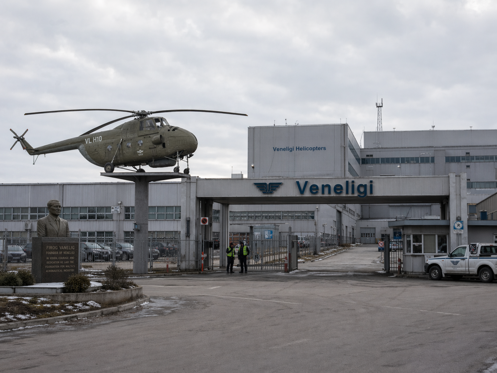
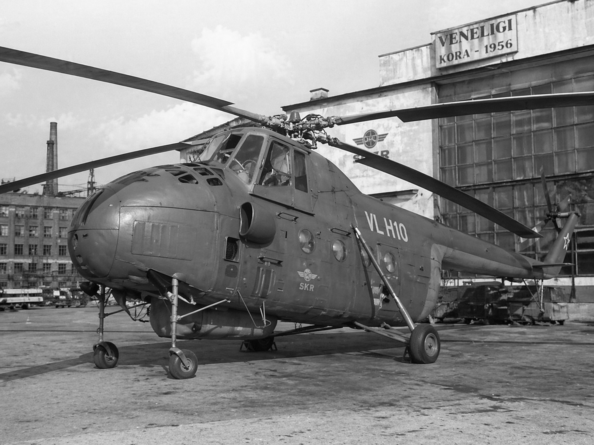

Veneligi
Veneligi — кивишский производитель вертолётов, основанный 20 августа 1955 года инженером Фирогом Ванелигом. Компания считается одной из базовых вертолётных школ СКР и Кивиша: от первых армейских машин 1950-х годов до гражданских, полицейских, санитарных и пожарных серий, а также закрытых военных проектов.

История
Создание бюро (1953–1955)
В 1953 году инженер Фирог Ванелиг, обратив внимание на развитие советских вертолётов, предложил Карасу Шентакосу начать собственное производство винтокрылой техники в СКР. Карас отказал, посчитав, что закупка машин у СССР будет проще и рациональнее.
К идее Ванелига вернулись в 1955 году. На фоне роста недоверия внутри коммунистического блока Карас начал искать способы увеличить технологическую самостоятельность СКР. 20 августа 1955 года было создано Конструкторное бюро Ванелига, позднее закрепившее за собой название Veneligi.
Первые разработки (1956–1959)

22 сентября 1956 года на заводе в Коре был собран первый вертолёт компании — VL H10, армейская машина раннего поколения. В 1957 году внутри бюро началось развитие собственного моторостроения для вертолётов.
В 1958 году был представлен VG H30-2 — скоростной транспортный вертолёт тандемной схемы, частично опиравшийся на решения тяжёлых транспортных машин того периода. Он создавался как средство быстрой переброски грузов и людей.
В 1959 году Veneligi выпустила первые специализированные машины для внутренних служб:
- VG P-40 — четырёхместный полицейский вертолёт;
- VG HH-5 — санитарный вертолёт со встроенными носилками;
- VG FH-369 — пожарный вертолёт на базе решений семейства H30-2.
Военная радикализация периода Караса (1960–1968)
В начале 1960-х годов Veneligi всё сильнее втягивалась в закрытые армейские программы. По позднее раскрытым документам, часть проектов этого периода создавалась под жёстким политическим давлением, а испытания некоторых боевых решений были связаны с репрессивной практикой на корейском направлении.
В 1965 году бюро завершило один из самых известных боевых проектов карасовского времени — VG AFK-6789, скоростной вертолёт-пулемётчик. В 1966 году Фирог Ванелиг попытался дистанцироваться от происходящего и оставил несколько посланий, в которых писал, что не хотел превращать своё дело в инструмент убийства. Часть этих писем позже всплыла за пределами страны.
В 1967 году, во время короткой передышки, бюро всё же успело обновить гражданскую линию и выпустить VG P-60, VG HH-9 и VG FH-540. Однако уже в 1968 году Фирог Ванелиг умер при обстоятельствах, которые впоследствии были признаны политическим убийством. После его смерти компания перешла под государственный контроль.
Упадок позднего карасовского периода (1968–1972)
После национализации предприятие стало работать всё менее стабильно. Карас пытался смягчить общественное недовольство выпуском «добрых» гражданских вертолётов для населения и служб, но качество этих машин оказалось заметно ниже, чем у техники периода самого Ванелига. Завод работал в спешке, производство шло рывками, а часть инициатив оставалась на уровне недоделанных серий.
К 1971 году общий кризис СКР сказался и на бюро: производство фактически просело, а предприятие оказалось в числе тех структур, которые поздний режим уже не контролировал системно. После гибели Караса в 1972 году начался новый этап истории компании.
Реформы Мирима и возвращение школы Ванелига (1972–1980)
После прихода к власти Мирима прежняя линия была публично пересмотрена. Компания получила возможность вернуться к нормальному развитию, а наследником убитого конструктора стал его сын — Ино Ванелиг. Одним из первых шагов нового периода стало восстановление репутации бюро и отказ от практики карасовского времени.
Под руководством Ино Ванелига началась работа над новыми пожарными, транспортными и специальными вертолётами. После выпуска модели VG FH-555 старый завод был закрыт, а производство перенесено в город Мальта. Новый завод был построен на отдельно выкупленном участке. У въезда установили памятник первому вертолёту бюро и мемориал Фирогу Ванелигу под названием «Убитый на правде».
В 1978 году компания выпустила лёгкий гражданский вертолёт VeLi 100. Машина создавалась как маленький двухместный вертолёт для местных жителей и учебного сегмента. За основу брались решения класса лёгких американских машин, но конструкция была переработана под местные условия и стандарты безопасности.
В 1980 году компания обновила служебную линейку:
- VeLi P50 — новое поколение полицейского вертолёта;
- VeLi H80 — полностью переработанный санитарный вертолёт;
- VeLi F70 — новая пожарная машина с увеличенным объёмом воды.
Поздний период СКР и выход на внешний рынок (1980-е — начало 1990-х)
В 1980-е годы компания в основном развивала уже существующие полицейские, пожарные, санитарные и гражданские серии. Параллельно выполнялись закрытые армейские заказы на новые модели, но они почти не разглашались.
После выхода страны из коммунистического блока в 1989 году Veneligi начала активнее работать на гражданский рынок. Компания сразу расширила конструкторские программы для общественного сектора и начала продажи на Запад. Одной из экспортных моделей стала VeLi 190, воспринимавшаяся как альтернатива американским гражданским вертолётам.
Проект DFTR-2479 (1992)
В 1992 году компания неожиданно вернулась к экспериментальной боевой теме и провела испытания высокоскоростного и высокоманёвренного четырёхместного вертолёта VeLi DFTR-2479. Машина задумывалась как преемник боевых проектов карасовского времени, но уже без их политического и репрессивного контекста.
Испытания были показаны только на фото- и видеоматериалах, после чего вертолёт убрали в закрытый армейский контур. В авиационной среде DFTR-2479 получил прозвище «Стрекоза». Несмотря на ограниченную публичность, именно эта машина долгое время считалась самой быстрой и манёвренной разработкой школы Veneligi.
Гражданская стабилизация и редкое возвращение «Стрекозы» (1990-е — 2020-е)
После 1990-х годов компания перестала делать резкие рывки и развивалась как обычный производитель вертолётов. Основой её деятельности стали гражданские, полицейские, пожарные и санитарные машины, а также поставки на внешний рынок. На Западе Veneligi постепенно закрепилась как один из производителей, стоявших в списке покупок у гражданских операторов наравне с другими популярными марками.
Компания экспериментировала с решениями в области безопасности, однако часть идей не доходила до серии из-за высокой цены или слабой практической выгоды. В этот период DFTR-2479 оставался закрытой разработкой и почти не упоминался публично.
Во время африканской кампании, завершившейся в 2021 году, армия Кивиша ограниченно использовала VeLi DFTR-2479. Машины применялись как редкий силовой козырь на заключительном этапе кампании. После завершения боевых действий «Стрекозы» были вновь выведены в закрытый армейский контур и возвращены на базы.
После этого Veneligi окончательно вернулась к роли обычного производителя вертолётов, оставаясь по уровню наравне с другими известными компаниями отрасли.
Ключевые модели
- VL H10 (1956) — первый армейский вертолёт компании.
- VG H30-2 (1958) — скоростной транспортный вертолёт тандемной схемы.
- VG P-40 (1959) — полицейский вертолёт.
- VG HH-5 (1959) — санитарный вертолёт.
- VG FH-369 (1959) — пожарный вертолёт.
- VG AFK-6789 (1965) — боевой вертолёт карасовского периода.
- VG P-60 (1967) — обновлённый полицейский вертолёт.
- VG HH-9 (1967) — обновлённый санитарный вертолёт.
- VG FH-540 (1967) — обновлённый пожарный вертолёт.
- VG FH-555 — модель переходного периода перед переносом завода.
- VeLi 100 (1978) — лёгкий двухместный гражданский вертолёт.
- VeLi P50 (1980) — полицейский вертолёт нового поколения.
- VeLi H80 (1980) — санитарный вертолёт нового поколения.
- VeLi F70 (1980) — пожарный вертолёт нового поколения.
- VeLi 190 — гражданская экспортная модель.
- VeLi DFTR-2479 (1992) — закрытая армейская разработка.
Международная деятельность
После 1989 года компания начала продавать гражданские модели за пределами Кивиша. На внешнем рынке Veneligi рассматривалась как один из альтернативных производителей лёгких и служебных вертолётов, конкурировавших с американскими и европейскими машинами в отдельных сегментах.
Наследие
Veneligi занимает заметное место в истории кивишского вертолётостроения. Компания прошла путь от раннего армейского бюро эпохи СКР до крупного производителя гражданских и служебных вертолётов. Отдельное место в её истории занимает фигура Фирога Ванелига и последующее восстановление его имени уже в период руководства Ино Ванелига.